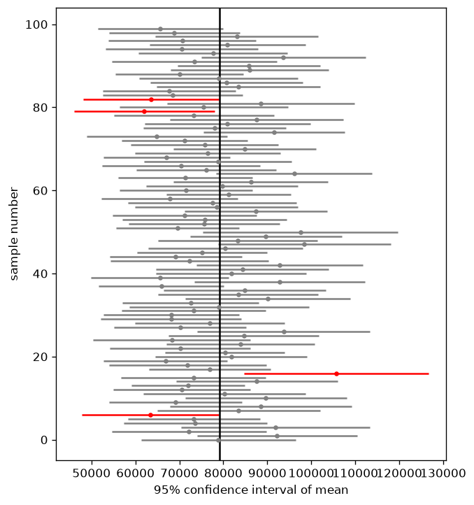
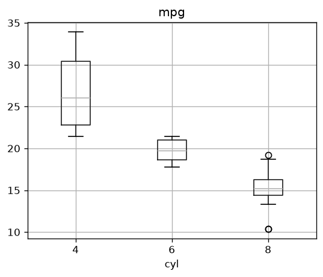

[6장] 통계학 개론: 표본, 분포, 추정, 검정
빅데이터개론
6장
통계학 개론: 표본, 분포, 추정, 검정
2027학년도 「빅데이터개론」의 준비 중인 교재입니다. 편집 상태를 검토하기 위해 미리 공개한 것으로, 수업 전에 내용과 순서가 바뀔 수 있습니다.
학사 7주차 · 교재 06 · 3부 데이터 분석 · ADsP 3과목 데이터분석 > 통계분석 (통계학 개론, 기초 통계분석 가운데 검정)
통계 분석은 모집단의 일부인 표본을 조사하여 모집단에 대해 판단하는 일이다. 이 장은 표본 추출과 측정 척도, 확률 분포, 추정, 가설 검정(t-검정, 카이제곱 검정, 일원 분산분석)을 다룬다. 시험은 용어의 구분과 사례의 판단을 주로 묻고, 검정은 R 출력을 읽는 문항으로도 나온다.
교재 05의 평균, 표준편차, 왜도, 상자그림을 전제로 한다. 이 장의 검정 용어(귀무 가설, 유의 확률, 유의수준)는 교재 07부터 모든 결과표를 읽는 데 쓰인다. 다음 주(학사 8주차)는 중간시험이며 범위는 교재 01~06이다.
학습 목표
- 모집단과 표본, 모수와 통계량을 구분하고, 확률 표본 추출 방법 넷과 측정 척도 넷을 사례에 짝짓는다.
- 이산 확률 분포와 연속 확률 분포의 종류를 구분하고, 기댓값과 분산을 계산한다.
- 표본의 크기에 따라 표본 평균의 분포가 어떻게 달라지는지 설명하고, 신뢰 구간과 신뢰수준의 뜻을 바르게 읽는다.
- 가설 검정의 절차를 말하고, 제1종 오류와 제2종 오류, 유의수준과 유의 확률, 양측 검정과 단측 검정을 구분한다.
- t-검정의 세 종류, 카이제곱 검정, 일원 분산분석, 비모수 검정을 사례에 맞게 고르고, 교차표의 기대도수와 분산분석표의 F를 손으로 계산하며, 파이썬과 R의 검정 출력에서 검정 통계량, 자유도, 유의 확률, 신뢰 구간을 읽는다.
수업의 흐름
- 시작하기(0절). 이 장의 모집단(거래 428건의 금액)을 확인한다.
- 개념과 따라 하기(1~4절). 결과를 예상한 뒤 노트북의 셀을 실행하여 견준다.
- 중심 실습(5절). 표본 평균의 분포를 확인하고, 연비의 차이를 t-검정으로 판정한다.
- R 출력 해석(6절). 검정 출력에서 시험이 묻는 값의 자리를 확인한다.
- 주간 문항 세트. 1~10번을 수업에서 푼다.
노트북에서 제목 끝에 [선택]이 붙은 절은 이 교재가 다루지 않는 보충이다. 뒤의 셀이 앞의 변수를 쓰므로 셀은 실행해 둔다.
준비 사항
| 항목 | 내용 |
|---|---|
| 실습 노트북 | ADsP_06장_실습_학생용.ipynb(「시작하기」, 「따라 하기 1~4」, 「중심 실습」) |
| 자료 | transactions.csv(거래 428건), customers.csv(고객 60명의 성별과 지역), mtcars.csv(자동차 32종), sleep.csv(10명의 수면 시간) |
| 앞 장과의 연계 | 교재 05의 기술 통계와 그림, 교재 04의 그룹별 집계 |
| 실습 환경 | 부록 A |
0. 시작하기
0.1 지난 장 되짚기
교재 05 「결측값·이상값과 기술 통계」에서 오른쪽으로 꼬리가 긴 분포는 평균이 중앙값보다 크다는 것과, 표본의 분산은 n - 1로 나눈다는 것을 배웠다. n - 1의 까닭은 3.3절에서 다룬다.
0.2 노트북 열기와 첫 셀의 실행
- 부록 A의 방법으로 JupyterLab을 열고
ADsP_06장_실습_학생용.ipynb를 연다. - 「시작하기」의 첫 코드 셀을 실행한다. 거래 자료를 읽어 금액을 요약한다.
[그림 자리: JupyterLab에서 첫 셀을 실행한 화면] 노트북
ADsP_06장_실습_학생용.ipynb의 「시작하기」 셀을 실행한 뒤의 화면. 셀 왼쪽의 실행 번호[1]과 셀 아래의 출력(428과describe()의 표)이 보이게 찍는다. 찍을 곳: 실습 환경의 JupyterLab.
sales = pd.read_csv(DATA + "transactions.csv")
amount = sales["금액"]
print(len(amount))
print(amount.describe().round(1))428
count 428.0
mean 79104.2
std 61154.7
min 7500.0
25% 32800.0
50% 57600.0
75% 111950.0
max 246400.0
Name: 금액, dtype: float64- 확인 1 첫 셀이 오류 없이 실행되어
428과 금액의 요약(mean79104.2,50%57600.0)이 나왔다.
ModuleNotFoundError나 FileNotFoundError가 나면 부록 A의 자료 배치를 확인한다.
0.3 이 장의 물음
mean이 50%보다 크므로 금액은 오른쪽으로 꼬리가 긴 분포다. 이 장은 이 428건을 모집단으로 놓고 표본의 값이 얼마나 벗어나는지를 잰다. 장의 끝에서 답할 물음은 이것이다. 자동차 32종에서 수동 변속기 차의 평균 연비가 자동 변속기 차보다 7.2 높았다. 이 차이는 우연으로 생길 수 있는 크기인가.
1. 모집단과 표본
배경과 쓰임
국가데이터처(옛 통계청)의 통계용어사전은 전수 조사를 비용이 매우 높아 인구·주택처럼 통계의 필요성이 매우 높은 분야에서 쓰는 조사로 해설하며, 그 밖의 국가 통계의 상당수는 표본 조사로 만들어진다. 같은 사전은 표본 오차를 “조사모집단 전체를 조사하지 않고 일부만 조사함에 따라 발생하는 오차”로 정의한다. 표본 조사의 숫자를 읽을 때에는 함께 공표된 표본 오차를 본다.
[최신 자료 자리: 국가 통계의 표본 규모와 표본 오차의 공표 예] 경제활동인구조사 등 대표적인 표본 조사의 표본 가구 수, 표본 설계(층화, 집락), 공표하는 표본 오차나 상대 표준 오차의 값. 확인할 곳: 국가데이터처 통계설명자료 https://www.mods.go.kr/statDesc.es?mid=a10501010000, KOSIS의 조사 개요. 2026-11-16에 통계설명자료의 목록 쪽까지 확인하였고, 조사별 상세 값은 화면에서 읽지 못하였다. 수업 전에 다시 확인한다.
1.1 모집단, 표본, 모수, 통계량
| 용어 | 뜻 | 예 |
|---|---|---|
| 모집단 | 알고자 하는 대상 전체 | 어느 상점의 한 해 거래 전체 |
| 표본 | 모집단에서 뽑아 조사한 일부 | 그 가운데 뽑은 거래 30건 |
| 모수 | 모집단의 특성을 나타내는 값(모평균, 모분산, 모비율) | 거래 전체의 평균 금액 |
| 통계량 | 표본에서 계산한 값(표본 평균, 표본 분산, 표본 비율) | 뽑은 30건의 평균 금액 |
모집단 전체를 조사하는 것이 전수 조사, 표본만 조사하는 것이 표본 조사다. 모수는 정해진 값이지만 보통 알 수 없고, 통계량은 표본마다 달라진다.
1.2 표본 추출 방법
모집단의 각 원소가 뽑힐 확률을 알 수 있게 뽑는 방법을 확률 표본 추출이라 한다.
| 방법 | 절차 | 예 |
|---|---|---|
| 단순 임의 추출 | 각 원소가 뽑힐 확률이 같도록 임의로 뽑는다 | 거래 428건에서 난수로 30건을 뽑는다 |
| 계통 추출 | 번호순으로 늘어놓고, 첫 구간에서 하나를 임의로 뽑은 뒤 일정한 간격으로 뽑는다 | 생산 순서대로 50번째마다 하나를 검사한다 |
| 층화 추출 | 성질이 비슷한 원소끼리 층으로 나누고, 모든 층에서 각각 임의로 뽑는다 | 연령대마다 10명씩 뽑는다 |
| 집락 추출 | 여러 집락으로 나누고, 집락 몇 개를 임의로 뽑아 그 원소를 조사한다 | 지점 40곳 가운데 5곳의 고객 전원을 조사한다 |
| 구분 | 층화 추출 | 집락 추출 |
|---|---|---|
| 나누는 기준 | 층 안은 비슷하고, 층과 층은 다르다 | 집락 안은 섞여 있고, 집락과 집락은 비슷하다 |
| 뽑는 방식 | 모든 층에서 조금씩 뽑는다 | 일부 집락만 뽑는다 |
| 목적 | 추정의 정밀도를 높인다 | 비용과 시간을 줄인다 |
계통 추출의 간격은 모집단의 크기 ÷ 표본의 크기다. 뽑은 원소를 되돌려 놓고 다시 뽑는 것을 복원 추출, 되돌려 놓지 않는 것을 비복원 추출이라 한다. 조사자가 편한 대로 고르는 편의 추출 등은 비확률 표본 추출이다.
1.3 표본 오차와 비표본 오차
| 구분 | 표본 오차 | 비표본 오차 |
|---|---|---|
| 원인 | 모집단의 일부만 조사한다 | 조사 과정의 잘못(측정 도구, 무응답, 거짓 응답, 입력 실수) |
| 표본을 키우면 | 줄어든다 | 줄지 않는다 |
| 전수 조사에서 | 생기지 않는다 | 생긴다 |
뽑는 방법이 잘못되어 모집단의 일부가 덜 뽑히는 것을 표본 편의라 하며, 확률 표본 추출로 줄인다.
1.4 측정 척도
| 척도 | 뜻 | 쓸 수 있는 연산 | 예 (학기 공통 자료) |
|---|---|---|---|
| 명목 척도 | 대상을 구분하는 이름. 순서가 없다 | 같다, 다르다 | 결제수단, 지역, 고객ID |
| 서열 척도 | 순서가 있으나 간격이 일정하지 않다 | 크기 비교 | 연령대, 만족도 5단계 |
| 등간 척도 | 간격이 일정하고 절대적인 0이 없다 | 덧셈과 뺄셈 | 거래일, 섭씨 온도 |
| 비율 척도 | 간격이 일정하고 절대적인 0이 있다 | 곱셈과 나눗셈 | 수량, 금액 |
- 명목·서열 척도의 자료를 질적 자료(범주형 자료), 등간·비율 척도의 자료를 양적 자료(수치형 자료)라 한다.
- 숫자로 적혀 있다고 양적 자료인 것은 아니다. 고객 번호는 명목 척도다. 자료형(
int64,str)은 저장 방식이고 척도는 값의 뜻이다.
따라 하기
노트북의 「따라 하기 1. 모집단과 표본」을 실행한다(1.2와 1.4는 [선택]).
예상. (1) 428건 전체로 구한 모표준편차는 0절의 std(61154.7)보다 클까, 작을까. (2) 네 추출 방법 가운데 표본의 크기가 30이 아닐 수 있는 것은 어느 것일까.
mu = amount.mean() # 모집단의 평균 (모수)
sigma = amount.std(ddof=0) # 모집단의 표준편차 (모수). ddof=0은 428로 나눈다는 뜻이다
print("모평균:", round(mu, 1))
print("모표준편차:", round(sigma, 1))
print("중앙값:", amount.median())
print("왜도:", round(stats.skew(amount), 3))
print("왜도(pandas):", round(amount.skew(), 3))모평균: 79104.2
모표준편차: 61083.2
중앙값: 57600.0
왜도: 1.06
왜도(pandas): 1.064
- 확인 2 모평균이 79104.2, 모표준편차가 61083.2로 나왔고, 모표준편차가
std(61154.7)보다 작았다.
std는 n - 1로, 모표준편차는 n으로 나눈다(예상 1). 왜도의 두 값은 stats.skew()가 보정하지 않고 pandas가 보정한 차이다. 이어지는 네 셀은 네 방법으로 표본을 뽑는다(계통은 14행마다, 층화는 품목군마다 6건, 집락은 두 지역의 거래 전부).
단순 임의 추출: 30 건, 평균 66596.7
시작 위치: 8
계통 추출: 30 건, 평균 72633.3
품목군
가전 6
도서 6
생활 6
식품 6
의류 6
Name: count, dtype: int64
층화 추출: 30 건, 평균 91043.3
지역: ['경기', '광주', '대전', '부산', '서울']
뽑힌 지역: ['경기' '대전']
집락 추출: 143 건, 평균 74988.1- 확인 3 층화 추출의 표본에 다섯 품목군이 6건씩 들어 있고, 집락 추출의 표본은 뽑힌 두 지역(경기, 대전)의 거래 143건이었다.
네 표본의 평균과 모평균의 차이가 표본 오차다. 집락 추출은 뽑힌 집락을 모두 조사하므로 표본의 크기를 미리 정할 수 없다(예상 2).
2. 확률 분포
배경과 쓰임
불량품의 개수는 이항 분포로, 콜센터의 시간당 전화 수는 포아송 분포로, 고장까지의 시간은 지수 분포로 따진다. 4절의 검정은 t, 카이제곱, F 분포로 유의 확률을 계산한다.
2.1 확률 변수와 확률 분포
확률 변수는 우연에 따라 값이 정해지는 변수이고, 그 값과 확률의 대응이 확률 분포다.
| 구분 | 이산 확률 변수 | 연속 확률 변수 |
|---|---|---|
| 값 | 셀 수 있다(0, 1, 2, …) | 구간 안의 모든 실수 |
| 함수 | 확률 질량 함수(값마다 확률) | 확률 밀도 함수(곡선 아래 넓이가 확률) |
| 한 값의 확률 | 0보다 클 수 있다 | 0이다 |
2.2 기댓값과 분산
기댓값 = (값 × 그 값의 확률)을 모두 더한 것
분산 = ((값 - 기댓값)² × 그 값의 확률)을 모두 더한 것
동전을 두 번 던져 앞면이 나온 횟수 X가 0, 1, 2일 확률이 0.25, 0.5, 0.25이면 기댓값은 0 × 0.25 + 1 × 0.5 + 2 × 0.25 = 1, 분산은 (0 - 1)² × 0.25 + 0 + (2 - 1)² × 0.25 = 0.5다. 상수 a, b에 대하여 aX + b의 기댓값은 a × (X의 기댓값) + b, 분산은 a² × (X의 분산)이다.
2.3 이산 확률 분포
| 분포 | 무엇의 분포인가 | 평균과 분산 |
|---|---|---|
| 베르누이 분포 | 성공 확률이 p인 시행을 한 번 했을 때의 성공 여부(1 또는 0) | 평균 p, 분산 p(1 - p) |
| 이항 분포 | 베르누이 시행을 독립적으로 n번 했을 때의 성공 횟수 | 평균 np, 분산 np(1 - p) |
| 기하 분포 | 첫 성공이 나올 때까지의 시행 횟수 | 평균 1 ÷ p |
| 포아송 분포 | 정해진 시간이나 공간 안에서 사건이 일어나는 횟수 | 평균과 분산이 같다 |
2.4 연속 확률 분포
| 분포 | 특징 | 쓰이는 곳 |
|---|---|---|
| 균등 분포 | 구간 안의 모든 값이 같은 밀도 | 난수 |
| 정규 분포 | 대칭인 종 모양. 평균 0, 표준편차 1이면 표준 정규 분포 | 측정값, 표본 평균 |
| 지수 분포 | 사건이 일어날 때까지의 시간 | 대기 시간 |
| t 분포 | 정규 분포보다 꼬리가 두껍고, 자유도가 크면 정규 분포에 가깝다 | 평균의 추정과 검정 |
| 카이제곱 분포 | 0 이상, 자유도 하나 | 분산, 범주형 자료의 검정 |
| F 분포 | 0 이상, 자유도 둘 | 분산의 비, 분산분석 |
주문의 수가 포아송 분포이면 주문 사이의 시간은 지수 분포다. 값에서 평균을 빼고 표준편차로 나누는 것을 표준화라 하며, 정규 분포를 표준화하면 표준 정규 분포가 된다.
따라 하기
노트북의 「따라 하기 2. 확률 분포」를 실행한다(2.1과 2.4는 [선택]). scipy.stats의 분포에서 pmf는 이산 분포의 한 값의 확률, cdf는 누적 확률, ppf는 누적 확률이 그 값이 되는 자리(cdf의 반대)를 낸다.
예상. (1) 동전을 10번 던져 앞면이 정확히 5번 나올 확률은 0.5보다 클까. (2) 자유도 5인 t 분포에서 가운데 95%를 남기는 값은 1.96보다 클까.
이산 분포의 셀들은 B(10, 0.5)에서 성공이 3번일 확률, 평균 2인 포아송 분포에서 0이 나올 확률, B(10, 0.5)의 확률 11개, 평균과 분산을 낸다. 다음 셀은 정규 분포와 t 분포의 값을 구한다.
0.1172
0.1353
[0.001 0.0098 0.0439 0.1172 0.2051 0.2461 0.2051 0.1172 0.0439 0.0098
0.001 ]
확률의 합: 1.0
이항 B(10, 0.5) 평균 5.0 분산 2.5
포아송(평균 2) 평균 2.0 분산 2.0
기하(p = 0.2) 평균 5.0# 표준 정규 분포에서 평균의 양쪽 1, 2, 3 표준편차 안에 들 확률
print(round(stats.norm.cdf(1) - stats.norm.cdf(-1), 4))
print(round(stats.norm.cdf(2) - stats.norm.cdf(-2), 4))
print(round(stats.norm.cdf(3) - stats.norm.cdf(-3), 4))
# 가운데 95%를 남기는 값: 표준 정규 분포, 자유도 31인 t 분포, 자유도 5인 t 분포
print(round(stats.norm.ppf(0.975), 4))
print(round(stats.t.ppf(0.975, 31), 4))
print(round(stats.t.ppf(0.975, 5), 4))0.6827
0.9545
0.9973
1.96
2.0395
2.5706- 확인 4 B(10, 0.5)에서 성공이 5번일 확률이 0.2461이고, 자유도 5인 t 분포에서 가운데 95%를 남기는 값이 2.5706으로 나왔다.
가장 흔한 결과도 확률은 0.2461이다(예상 1). 정규 분포에서는 평균의 양쪽 1, 2, 3 표준편차 안에 약 68%, 95%, 99.7%가 든다. t 분포는 꼬리가 두꺼워 1.96보다 멀리 가야 하며(예상 2), 자유도 31에서는 2.0395다. 노트북 2.4([선택])는 F 분포(자유도 2와 29)의 오른쪽 5% 자리 3.3277을 구한다.
3. 표본 분포와 추정
배경과 쓰임
여론조사의 보도에 표본의 크기와 함께 적히는 “95% 신뢰수준에서 표본 오차 ±3.1%포인트”가 추정 결과의 보고다(3.6절에서 계산한다). 국가데이터처의 통계용어사전은 표준 오차를 “통계량의 표본분포가 가지는 표준편차”로 정의하고, 자료의 변동성인 표준편차와 구분해 써야 한다고 해설한다.
[최신 자료 자리: 선거 여론조사 결과의 공표 기준] 여론조사 결과를 공표하거나 보도할 때 함께 밝혀야 하는 사항(표본의 크기, 표본 오차, 신뢰수준 등)과 그 근거 규정. 확인할 곳: 중앙선거여론조사심의위원회 https://www.nesdc.go.kr의 「선거여론조사기준」, 국가법령정보센터의 「공직선거법」 제108조. 2026-11-16에 규정의 원문을 열지 못하여 본문에는 계산만 실었다. 수업 전에 확인한다.
3.1 표본 평균의 분포
통계량의 분포를 표본 분포라 한다. 표본 평균의 분포는 중심이 모평균이고 원자료보다 좁게 퍼지며, 그 표준편차를 표준 오차라 한다.
[그림 자리: 표본 분포의 개념도] 왼쪽에 오른쪽으로 치우친 모집단의 히스토그램(거래 금액), 가운데에 그 모집단에서 뽑은 크기 30인 표본 세 개(표본마다 평균을 적은 작은 상자), 오른쪽에 표본 평균 1,000개가 이루는 종 모양의 분포를 화살표로 잇는 도식. 오른쪽 분포의 가로 폭에 “표준 오차 = 모표준편차 ÷ √n”을 적는다. 그림 안의 글자는 영문(population, sample 1, sample mean, standard error)으로 쓴다. 만들 곳: 도식 편집기.
표본 평균의 표준 오차 = 모표준편차 ÷ √n
표준 오차는 통계량이 표본에 따라 흔들리는 정도다. 모표준편차를 모르면 표본 표준편차를 넣는다.
3.2 중심극한정리
모집단의 분포가 어떤 모양이든, 표본의 크기가 충분히 크면 표본 평균의 분포는 정규 분포에 가까워진다. 그 평균은 모평균이고 표준편차는 모표준편차 ÷ √n이다.
흔히 n이 30 이상이면 충분히 크다고 본다. 모집단이 정규 분포이면 n이 작아도 표본 평균은 정규 분포를 따른다. 표본을 크게 뽑는다고 모집단의 분포가 정규 분포로 바뀌는 것은 아니다.
3.3 점 추정과 좋은 추정량의 조건
모수를 하나의 값으로 어림하는 것이 점 추정이며(모평균은 표본 평균으로), 추정에 쓰는 통계량을 추정량이라 한다.
| 조건 | 뜻 |
|---|---|
| 불편성 | 추정량의 기댓값이 모수와 같다 |
| 효율성 | 불편 추정량 가운데 분산이 작다 |
| 일치성 | 표본이 커질수록 추정량이 모수에 가까워진다 |
| 충족성 | 표본에 든 모수에 관한 정보를 빠짐없이 쓴다 |
표본 분산을 n - 1로 나누어야 모분산의 불편 추정량이 된다. n으로 나눈 분산은 평균적으로 모분산보다 작다.
3.4 구간 추정
모수가 들어 있을 것으로 보는 구간이 신뢰 구간이고, 구간을 만드는 방법이 모수를 맞히는 비율이 신뢰수준이다.
모평균의 신뢰 구간 = 표본 평균 ± (분포에서 읽은 값) × 표준 오차
모표준편차를 모르면 자유도 n - 1인 t 분포를 쓴다. 신뢰수준을 높이면 구간이 길어지고, 표본을 키우면 짧아진다.
3.5 신뢰수준의 뜻
신뢰수준 95%는, 같은 방법으로 표본을 뽑아 신뢰 구간을 만드는 일을 여러 번 되풀이할 때 그 구간들 가운데 약 95%가 모수를 포함한다는 뜻이다.
| 잘못 읽은 문장 | 틀린 까닭 |
|---|---|
| 모평균이 이 구간 안에 있을 확률이 95%다 | 모평균은 정해진 값이다. 구한 구간은 모평균을 품었거나 품지 못했거나 둘 중 하나다 |
| 자료의 95%가 이 구간 안에 있다 | 신뢰 구간은 자료의 범위가 아니라 모평균에 대한 구간이다 |
| 다시 뽑은 표본의 평균이 이 구간 안에 있을 확률이 95%다 | 신뢰 구간은 모수를 겨냥한다 |
3.6 오차 한계와 표본의 크기
신뢰 구간의 반쪽 길이를 오차 한계라 하며, 식을 거꾸로 풀면 필요한 표본의 크기가 나온다.
필요한 표본의 크기 n = (분포에서 읽은 값 × 모표준편차 ÷ 오차 한계)²
비율이면 모표준편차 자리에 √(p(1 - p))를 쓰고, p를 모르면 0.5를 넣는다. 1,000명 조사의 오차 한계는 1.96 × √(0.5 × 0.5 ÷ 1000) ≈ 0.031, 곧 ±3.1%포인트다. 이를 절반으로 줄이려면 표본이 네 배 필요하다. 비표본 오차는 표본을 키워도 줄지 않는다.
따라 하기
노트북의 「따라 하기 3. 표본 분포와 추정」의 3.1~3.3을 실행한다(3.4~3.7은 [선택]).
예상. (1) 크기 30인 표본의 평균 1,000개의 표준편차는 금액의 표준편차(약 61,000)와 비슷할까. (2) 95% 신뢰 구간 100개 가운데 모평균을 품지 못하는 구간은 몇 개쯤일까.
rng = np.random.default_rng(2027)
means = rng.choice(amount, size=(1000, 30)).mean(axis=1)
print(means.shape)
print(means[:5].round(1))
print("표본 평균 1,000개의 평균:", round(means.mean(), 1))
print("표본 평균 1,000개의 표준편차:", round(means.std(), 1))
print("모표준편차 ÷ 루트 n:", round(sigma / np.sqrt(30), 1))(1000,)
[82593.3 85880. 82620. 91016.7 63433.3]
표본 평균 1,000개의 평균: 79739.8
표본 평균 1,000개의 표준편차: 11160.6
모표준편차 ÷ 루트 n: 11152.2size=(1000, 30)은 한 행이 표본 하나인 1,000행의 표를 뽑고, .mean(axis=1)은 행마다 평균을 구한다. 시드(2027)를 고정하여 늘 같은 표본이 뽑힌다.
- 확인 5 표본 평균 1,000개의 평균이 79739.8, 표준편차가 11160.6으로 나왔다.

표준편차 11160.6은 모표준편차 ÷ √30과 거의 같고(예상 1), 히스토그램은 대칭에 가깝다(중심극한정리). 다음 셀은 mtcars의 연비(mpg)로 신뢰 구간을 구한다.
cars = pd.read_csv(DATA + "mtcars.csv")
mpg = cars["mpg"]
xbar = mpg.mean() # 표본 평균
se = mpg.std() / np.sqrt(len(mpg)) # 표준 오차 = 표본 표준편차 ÷ 루트 n
t975 = stats.t.ppf(0.975, len(mpg) - 1) # 자유도 31인 t 분포에서 가운데 95%를 남기는 값
print("표본 평균:", round(xbar, 4))
print("표준 오차:", round(se, 4))
print("95% 신뢰 구간:", round(xbar - t975 * se, 4), round(xbar + t975 * se, 4))
for level in [0.90, 0.95, 0.99]:
low, high = stats.t.interval(level, len(mpg) - 1, loc=xbar, scale=se)
print(level, round(low, 4), round(high, 4), "길이", round(high - low, 4))표본 평균: 20.0906
표준 오차: 1.0654
95% 신뢰 구간: 17.9177 22.2636
0.9 18.2842 21.8971 길이 3.6129
0.95 17.9177 22.2636 길이 4.3459
0.99 17.1671 23.0142 길이 5.8471- 확인 6 95% 신뢰 구간이 17.9177에서 22.2636까지였고, 구간의 길이가 신뢰수준 90%, 95%, 99%에서 3.6129, 4.3459, 5.8471로 길어졌다.
95% 구간은 20.0906 ± 2.0395 × 1.0654다. 다음 셀은 크기 50인 표본 100개로 95% 신뢰 구간을 만들어 모평균을 품는 구간을 센다.
rng = np.random.default_rng(2027)
samples = rng.choice(amount, size=(100, 50)) # 표본 100개 (한 행이 크기 50인 표본 하나)
m = samples.mean(axis=1) # 표본마다의 평균
half = stats.t.ppf(0.975, 49) * samples.std(axis=1, ddof=1) / np.sqrt(50) # 구간의 반쪽 길이
hit = (m - half <= mu) & (mu <= m + half) # 구간이 모평균을 품으면 True
print("모평균을 품은 구간의 수:", hit.sum())
print("품지 못한 구간의 수:", 100 - hit.sum())모평균을 품은 구간의 수: 96
품지 못한 구간의 수: 4
- 확인 7 신뢰 구간 100개 가운데 96개가 모평균을 품었고, 붉은 가로 막대 4개가 세로선(모평균)에 닿지 않았다.
구간은 표본마다 움직이고 모평균은 움직이지 않는다. 기대하는 수는 약 5개이며 4개나 6개도 흔하다(예상 2).
4. 가설 검정
배경과 쓰임
미국 국립표준기술연구소(NIST)의 공학 통계 안내서는 공정의 평균을 목표값과 견주는 검정을 예로 들어, 유의수준을 “귀무 가설이 참인데 기각할 확률”로 놓고 작게 잡는 까닭이 기각했을 때의 결론을 설득력 있게 하기 위함이라고 설명한다.
4.1 가설과 검정의 절차
| 가설 | 뜻 | 예 |
|---|---|---|
| 귀무 가설 | 차이가 없다, 효과가 없다는 가설. 등호가 들어간다 | 두 변속기 차의 평균 연비는 같다 |
| 대립 가설 | 귀무 가설과 맞서며, 표본으로 뒷받침하려는 주장 | 두 집단의 평균 연비는 같지 않다 |
- 귀무 가설과 대립 가설을 세운다.
- 유의수준을 자료를 보기 전에 정한다(흔히 0.05).
- 표본에서 검정 통계량(t 값, F 값 등)을 계산한다.
- 검정 통계량의 유의 확률을 구한다.
- 유의 확률이 유의수준보다 작으면 귀무 가설을 기각하고, 그렇지 않으면 기각하지 못한다.
4.2 제1종 오류와 제2종 오류
| 판정 실제 | 귀무 가설이 참이다 | 귀무 가설이 거짓이다 |
|---|---|---|
| 귀무 가설을 기각하지 않는다 | 옳은 판정 | 제2종 오류 (확률 β) |
| 귀무 가설을 기각한다 | 제1종 오류 (확률 α) | 옳은 판정 (확률 1 - β, 검정력) |
검정력은 실제 차이가 클수록, 표본이 클수록, 유의수준이 느슨할수록 높다. 표본의 크기가 같으면 제1종 오류의 확률을 줄일 때 제2종 오류의 확률이 커진다.
[그림 자리: 오류의 네 칸] 가로에 실제(귀무 가설이 참, 거짓), 세로에 판정(기각하지 않음, 기각)을 둔 2 × 2 표. 네 칸에 각각 correct, Type II error (beta), Type I error (alpha), correct (power = 1 - beta)를 적고 오류 두 칸에만 색을 칠한다. 표 아래에 출하 검사의 예(귀무 가설: the lot is good)를 칸마다 한 줄씩 단다. 그림 안의 글자는 영문으로 쓴다. 만들 곳: 도식 편집기.
오류를 판단할 때에는 귀무 가설을 먼저 문장으로 적는다. 귀무 가설이 “이 제품 묶음은 정상이다”이면 정상인 묶음을 폐기하는 것이 제1종 오류, 불량인 묶음을 출하하는 것이 제2종 오류다.
4.3 유의수준과 유의 확률
| 용어 | 뜻 | 누가 정하는가 |
|---|---|---|
| 유의수준(α) | 제1종 오류를 범할 확률의 허용 한계 | 분석자가 검정 전에 정한다 |
| 유의 확률(p-value) | 귀무 가설이 참일 때, 검정 통계량이 표본의 값만큼 또는 그보다 극단적으로 나올 확률 | 표본에서 계산된다 |
유의 확률 < 유의수준이면 귀무 가설을 기각한다. 유의 확률 ≥ 유의수준이면 귀무 가설을 기각하지 못한다.
유의수준에 해당하는 검정 통계량의 경계값을 임계값, 그 바깥을 기각역이라 한다. 검정 통계량이 기각역에 드는 것과 유의 확률이 유의수준보다 작은 것은 같은 판정이다.
[그림 자리: 기각역과 유의 확률] 자유도 18.332인 t 분포의 밀도 곡선 한 장. 양쪽 꼬리의 기각역(|t| > 2.0982, 넓이 0.025씩)을 옅은 색으로 칠하고, 표본에서 얻은 t = -3.7671의 자리에 세로선을 긋는다. 세로선 바깥 양쪽 꼬리의 넓이(합 0.001374)를 짙은 색으로 겹쳐 칠한다. 두 넓이를 견주면 “t가 기각역 안에 있다”와 “유의 확률 < 유의수준”이 같은 판정임이 보인다. 그림 안의 글자는 영문(rejection region, critical value, observed t, p-value)으로 쓴다. 만들 곳: matplotlib으로 그리거나 도식 편집기.
- 유의 확률은 귀무 가설이 참일 확률이 아니다.
- 기각하지 못한 것은 귀무 가설의 증명이 아니므로 “기각하지 못한다”라고 쓴다.
- 표본이 크면 작은 차이도 유의 확률이 작다.
4.4 양측 검정과 단측 검정
대립 가설이 “모수가 어떤 값과 같지 않다”이면 양측 검정(기각역은 양쪽 꼬리), “크다”나 “작다”이면 단측 검정(한쪽 꼬리)이다. 검정 통계량이 대립 가설의 방향으로 나오면 단측 검정의 유의 확률은 양측 검정의 절반이므로, 어느 검정을 쓸지는 자료를 보기 전에 정한다.
4.5 t-검정
t = (표본에서 구한 값 - 귀무 가설의 값) ÷ 표준 오차
| 종류 | 쓰는 경우 | 귀무 가설 | 자유도 |
|---|---|---|---|
| 일표본 t-검정 | 한 집단의 평균을 정해진 값과 견준다 | 모평균은 그 값과 같다 | n - 1 |
| 대응 표본 t-검정 | 같은 대상을 두 번 잰다(전과 후) | 차이의 모평균은 0이다 | 쌍의 수 - 1 |
| 독립 표본 t-검정 | 서로 다른 두 집단의 평균을 견준다 | 두 모평균은 같다 | 등분산을 가정하면 두 표본 크기의 합 - 2 |
t-검정은 정규 분포를 가정하나 표본이 크면 조금 벗어나도 쓸 수 있다. 등분산을 가정하지 않는 독립 표본 t-검정이 웰치의 t-검정이며 자유도가 소수로 나온다. 두 분산이 같은지는 분산의 비로 하는 등분산 검정(F 검정)으로 본다. stats.ttest_ind()는 등분산 가정이 기본값이어서 웰치의 검정은 equal_var=False로 지정하고, R의 t.test()는 웰치의 검정이 기본값이다.
4.6 모수 검정과 비모수 검정
| 구분 | 모수 검정 | 비모수 검정 |
|---|---|---|
| 모집단의 분포 | 정규 분포 등을 가정한다 | 가정하지 않는다 |
| 계산에 쓰는 것 | 값 자체 | 값의 순위나 부호 |
| 쓰는 경우 | 가정이 성립할 때 | 표본이 작을 때, 서열 척도, 이상값 |
| 검정력 | 가정이 성립하면 더 높다 | 가정이 성립하는 자료에서는 더 낮다 |
| 비모수 검정 | 쓰임 | 대응하는 모수 검정 |
|---|---|---|
| 부호 검정 | 차이의 부호만 쓴다 | 일표본, 대응 표본 t-검정 |
| 윌콕슨의 부호 순위 검정 | 차이의 부호와 순위를 쓴다 | 일표본, 대응 표본 t-검정 |
| 윌콕슨의 순위합 검정, 만-위트니 U 검정 | 두 집단을 합친 순위로 견준다 | 독립 표본 t-검정 |
| 런 검정 | 늘어선 순서가 무작위인가 | |
| 스피어만 순위 상관 계수 | 순위로 잰 상관(교재 07) | 피어슨 상관 계수 |
따라 하기
노트북의 「따라 하기 4. 가설 검정」의 4.1과 4.2를 실행한다(4.3~4.6은 [선택]).
예상. (1) 대응 표본 t-검정과, 사람마다의 차이 10개로 한 일표본 t-검정의 t 값은 같을까. (2) 자동 변속기 차 19종과 수동 변속기 차 13종의 평균 연비 차이는 유의수준 0.05에서 유의할까.
sleep은 10명에게 수면제 두 종류를 차례로 주고 늘어난 수면 시간(extra)을 잰 자료로, 같은 사람의 두 값이 짝을 이룬다.
sleep = pd.read_csv(DATA + "sleep.csv")
drug1 = sleep[sleep["group"] == 1]["extra"]
drug2 = sleep[sleep["group"] == 2]["extra"]
print(drug1.values)
print(drug2.values)
print("차이의 평균:", round(drug1.mean() - drug2.mean(), 2))
res2 = stats.ttest_rel(drug1, drug2)
print("t =", round(res2.statistic, 4))
print("자유도 =", res2.df)
print("유의 확률 =", round(res2.pvalue, 6))
# 사람마다의 차이 10개로 일표본 t-검정을 하면 결과가 같다
diff = drug1.values - drug2.values
print(diff.round(1))
res2b = stats.ttest_1samp(diff, 0)
print("t =", round(res2b.statistic, 4), " 유의 확률 =", round(res2b.pvalue, 6))[ 0.7 -1.6 -0.2 -1.2 -0.1 3.4 3.7 0.8 0. 2. ]
[ 1.9 0.8 1.1 0.1 -0.1 4.4 5.5 1.6 4.6 3.4]
차이의 평균: -1.58
t = -4.0621
자유도 = 9
유의 확률 = 0.002833
[-1.2 -2.4 -1.3 -1.3 0. -1. -1.8 -0.8 -4.6 -1.4]
t = -4.0621 유의 확률 = 0.002833- 확인 8 대응 표본 t-검정과 차이 10개의 일표본 t-검정이 모두 t = -4.0621, 유의 확률 0.002833으로 같았다.
대응 표본 t-검정은 차이의 일표본 t-검정과 같은 계산이며(예상 1), 유의 확률이 0.05보다 작으므로 두 수면제의 효과가 다르다고 판단한다. 다음은 mtcars의 변속기(am: 0 자동, 1 수동)별 연비의 요약, 두 독립 집단의 웰치 t-검정, 임계값이다.
count mean std
am
0 19 17.1474 3.8340
1 13 24.3923 6.1665
res3 = stats.ttest_ind(auto, manual, equal_var=False) # equal_var=False는 웰치의 t-검정이다
ci = res3.confidence_interval(0.95)
print("t =", round(res3.statistic, 4))
print("자유도 =", round(res3.df, 3))
print("유의 확률 =", round(res3.pvalue, 6))
print("평균 차이의 95% 신뢰 구간:", round(ci.low, 4), round(ci.high, 4))t = -3.7671
자유도 = 18.332
유의 확률 = 0.001374
평균 차이의 95% 신뢰 구간: -11.2802 -3.2097crit = stats.t.ppf(0.975, res3.df) # 양측 5%의 임계값. 기각역은 |t| > crit
p_two = 2 * stats.t.sf(abs(res3.statistic), res3.df) # 양쪽 꼬리의 넓이를 더한 것이 유의 확률이다
print("임계값:", round(crit, 4))
print("|t| > 임계값인가:", abs(res3.statistic) > crit)
print("t 분포의 양쪽 꼬리 넓이:", round(p_two, 6))임계값: 2.0982
|t| > 임계값인가: True
t 분포의 양쪽 꼬리 넓이: 0.001374- 확인 9 웰치의 t-검정에서 t = -3.7671, 자유도 18.332, 유의 확률 0.001374, 신뢰 구간 -11.2802에서 -3.2097까지가 나왔고, 임계값 2.0982에 대한 줄에
True가 나왔다.
t 값은 평균의 차이(자동 - 수동 = -7.2449)를 표준 오차로 나눈 값이다. 유의 확률이 0.05보다 작으므로 귀무 가설을 기각한다(예상 2). 임계값으로도, 0을 포함하지 않는 신뢰 구간으로도 같은 판정이다. 다만 변속기가 원인이라고는 말할 수 없다(교재 07).
4.7 카이제곱 검정
범주형 변수는 도수로 검정한다. 교차표의 관측도수가 “두 변수가 관계없다면 나올 도수”(기대도수)에서 벗어난 정도를 카이제곱 분포로 판정한다.
| 검정 | 묻는 것 | 귀무 가설 | 자유도 |
|---|---|---|---|
| 독립성 검정 | 범주형 변수 두 개가 관계가 있는가 | 두 변수는 독립이다 | (행의 수 - 1) × (열의 수 - 1) |
| 적합도 검정 | 변수 하나의 도수가 정해 둔 비율을 따르는가 | 비율은 정해 둔 값과 같다 | 범주의 수 - 1 |
여러 집단에서 범주의 분포가 같은지를 묻는 동질성 검정도 있으며 계산은 독립성 검정과 같다.
기대도수 = 행 합 × 열 합 ÷ 전체
카이제곱 통계량 = (관측도수 - 기대도수)² ÷ 기대도수를 모든 칸에서 더한 것
- 통계량은 0 이상이고 기각역은 오른쪽 꼬리다.
- 흔히 모든 칸의 기대도수가 5 이상이기를 요구하며, 5 미만인 칸이 20% 이하이면 된다는 기준도 있다. 채우지 못하면 범주를 합치거나 피셔의 정확 검정을 쓴다.
- 2 × 2 표에서 R의
chisq.test()는 연속성 수정(예이츠의 수정)을 기본으로 한다.
손 계산
거래 428건에 고객의 성별을 붙인 교차표다.
| 성별 결제수단 | 간편결제 | 계좌이체 | 카드 | 행 합 |
|---|---|---|---|---|
| 남 | 89 | 19 | 118 | 226 |
| 여 | 85 | 24 | 93 | 202 |
| 열 합 | 174 | 43 | 211 | 428 |
- (남, 간편결제)의 기대도수는 226 × 174 ÷ 428 ≈ 91.88이다.
- 그 칸의 기여는 (89 - 91.88)² ÷ 91.88 ≈ 0.09이며, 여섯 칸의 기여를 더한 것이 통계량이다.
- 자유도는 (2 - 1) × (3 - 1) = 2다.
따라 하기
노트북 4.7의 세 셀을 실행한다.
예상. 성별과 결제수단은 유의수준 0.05에서 관계가 있다고 판정될까.
첫 셀은 교차표, 기대도수, 칸마다의 기여를 식대로 계산하고, 둘째 셀은 stats.chi2_contingency()로 같은 검정을 한다.
cust = pd.read_csv(DATA + "customers.csv")
both = sales.merge(cust[["고객ID", "성별"]], on="고객ID")
tab = pd.crosstab(both["성별"], both["결제수단"]) # 관측도수의 교차표
print(pd.crosstab(both["성별"], both["결제수단"], margins=True))
row = tab.sum(axis=1) # 행 합 (성별의 거래 수)
col = tab.sum(axis=0) # 열 합 (결제수단의 거래 수)
total = tab.values.sum() # 전체 거래 수
print("기대도수(남, 간편결제) =", row["남"], "×", col["간편결제"], "÷", total, "=", round(row["남"] * col["간편결제"] / total, 4))
expected = np.outer(row, col) / total # 모든 칸의 기대도수: 행 합 × 열 합 ÷ 전체
print(expected.round(4))
part = (tab.values - expected) ** 2 / expected # 칸마다 (관측 - 기대)² ÷ 기대
print(part.round(4))
print("카이제곱 통계량 =", round(part.sum(), 4)) # 모든 칸을 더한다결제수단 간편결제 계좌이체 카드 All
성별
남 89 19 118 226
여 85 24 93 202
All 174 43 211 428
기대도수(남, 간편결제) = 226 × 174 ÷ 428 = 91.8785
[[ 91.8785 22.7056 111.4159]
[ 82.1215 20.2944 99.5841]]
[[0.0902 0.6048 0.3891]
[0.1009 0.6766 0.4353]]
카이제곱 통계량 = 2.2969res_chi = stats.chi2_contingency(tab)
print("카이제곱 통계량 =", round(res_chi.statistic, 4))
print("자유도 =", res_chi.dof)
print("유의 확률 =", round(res_chi.pvalue, 4))
print("임계값(유의수준 0.05) =", round(stats.chi2.ppf(0.95, res_chi.dof), 4))
print("기대도수가 5 미만인 칸의 수:", (res_chi.expected_freq < 5).sum())카이제곱 통계량 = 2.2969
자유도 = 2
유의 확률 = 0.3171
임계값(유의수준 0.05) = 5.9915
기대도수가 5 미만인 칸의 수: 0- 확인 10 (남, 간편결제)의 기대도수가 91.8785이고, 손으로 계산한 통계량과
chi2_contingency()의 통계량이 모두 2.2969, 자유도 2, 유의 확률 0.3171로 나왔다.
통계량이 임계값 5.9915보다 작고 유의 확률이 0.05보다 크므로 “성별과 결제수단은 독립이다”를 기각하지 못한다(예상). 셋째 셀은 결제수단의 도수가 비율(카드 0.5, 간편결제 0.4, 계좌이체 0.1)을 따르는지를 stats.chisquare()로 보는 적합도 검정이다.
관측도수: [211 174 43]
기대도수: [214. 171.2 42.8]
카이제곱 통계량 = 0.0888 자유도 = 2 유의 확률 = 0.9566자유도는 범주의 수 - 1 = 2이고, 귀무 가설을 기각하지 못한다.
4.8 일원 분산분석
셋 이상인 집단의 평균은 분산분석(ANOVA)으로 견주며, 요인(집단을 나누는 변수)이 하나이면 일원 분산분석이다. t-검정을 여러 번 하면 한 번이라도 잘못 기각할 확률이 유의수준보다 커지기 때문이다.
| 항목 | 내용 |
|---|---|
| 귀무 가설 | 모든 집단의 모평균은 같다 |
| 대립 가설 | 적어도 한 집단의 모평균은 다르다 |
| 가정 | 정규성, 등분산성, 독립성 |
| 검정 통계량 | F = 집단 간 평균 제곱 ÷ 집단 내 평균 제곱. 자유도 (집단 수 - 1, 전체 크기 - 집단 수) |
전체 제곱합 = 집단 간 제곱합 + 집단 내 제곱합
집단 간 제곱합 = (집단의 크기 × (집단 평균 - 전체 평균)²)을 모든 집단에서 더한 것
집단 내 제곱합 = ((집단의 크기 - 1) × 집단의 분산)을 모든 집단에서 더한 것
제곱합을 자유도로 나눈 것이 평균 제곱이다. 분산분석표의 꼴은 교재 07의 회귀 분산분석표와 같다(k는 집단 수, N은 전체 크기).
| 요인 | 제곱합 | 자유도 | 평균 제곱 | F |
|---|---|---|---|---|
| 집단 간 | 집단 간 제곱합 | k - 1 | 제곱합 ÷ (k - 1) | 집단 간 평균 제곱 ÷ 집단 내 평균 제곱 |
| 집단 내(잔차) | 집단 내 제곱합 | N - k | 제곱합 ÷ (N - k) |
[그림 자리: 분산의 분해] 가로축에 세 집단(4, 6, 8 cylinders), 세로축에 mpg를 둔 점 그림. 전체 평균을 가로 점선으로, 집단 평균을 집단마다 짧은 실선으로 긋는다. 한 점에서 전체 평균까지의 거리를 “집단 평균까지(within)”와 “집단 평균에서 전체 평균까지(between)”의 두 화살표로 나누어 보인다. 그림 안의 글자는 영문(grand mean, group mean, between, within)으로 쓴다. 만들 곳: matplotlib으로 그리거나 도식 편집기.
분산분석이 유의하면 “적어도 한 집단이 다르다”까지만 말할 수 있다. 어느 짝이 다른지는 사후 검정(다중 비교, R의 TukeyHSD())으로 본다.
손 계산
mtcars의 연비를 실린더 수(cyl)로 나눈 세 집단이다(전체 평균 20.0906).
cyl |
크기 | 평균 | 분산 |
|---|---|---|---|
| 4 | 11 | 26.6636 | 20.3385 |
| 6 | 7 | 19.7429 | 2.1129 |
| 8 | 14 | 15.1000 | 6.5538 |
- 집단 간 제곱합 = 11 × (26.6636 - 20.0906)² + 7 × (19.7429 - 20.0906)² + 14 × (15.1000 - 20.0906)² ≈ 824.78
- 집단 내 제곱합 = 10 × 20.3385 + 6 × 2.1129 + 13 × 6.5538 ≈ 301.26
- 자유도는 2와 29, 평균 제곱은 412.39와 10.39, F ≈ 39.7이다. 자유도 2와 29인 F 분포의 오른쪽 5% 자리 3.3277보다 훨씬 크다.
따라 하기
노트북 4.8의 세 셀을 실행한다(셋째 셀은 statsmodels를 쓴다).
예상. 기각하면 “4기통, 6기통, 8기통의 평균 연비가 모두 다르다”고 말할 수 있을까.
첫 셀은 집단별 요약과 상자그림을, 둘째 셀은 위의 식을, 셋째 셀은 stats.f_oneway()와 statsmodels의 anova_lm()을 실행한다.
count mean var
cyl
4 11 26.6636 20.3385
6 7 19.7429 2.1129
8 14 15.1000 6.5538
전체 평균: 20.0906
grand = cars["mpg"].mean()
ssb = (grp["count"] * (grp["mean"] - grand) ** 2).sum() # 집단 간 제곱합: 크기 × (집단 평균 - 전체 평균)²
ssw = ((grp["count"] - 1) * grp["var"]).sum() # 집단 내 제곱합: (크기 - 1) × 집단 분산
df_b = len(grp) - 1 # 집단 간 자유도: 집단 수 - 1
df_w = len(cars) - len(grp) # 집단 내 자유도: 전체 크기 - 집단 수
msb = ssb / df_b # 평균 제곱 = 제곱합 ÷ 자유도
msw = ssw / df_w
F = msb / msw
print("집단 간: 제곱합", round(ssb, 4), " 자유도", df_b, " 평균 제곱", round(msb, 4))
print("집단 내: 제곱합", round(ssw, 4), " 자유도", df_w, " 평균 제곱", round(msw, 4))
print("F =", round(F, 4), " 유의 확률 =", format(stats.f.sf(F, df_b, df_w), ".3e"))집단 간: 제곱합 824.7846 자유도 2 평균 제곱 412.3923
집단 내: 제곱합 301.2626 자유도 29 평균 제곱 10.3884
F = 39.6975 유의 확률 = 4.979e-09res_f = stats.f_oneway(cars[cars["cyl"] == 4]["mpg"], cars[cars["cyl"] == 6]["mpg"], cars[cars["cyl"] == 8]["mpg"])
print("f_oneway: F =", round(res_f.statistic, 4), " 유의 확률 =", format(res_f.pvalue, ".3e"))
import statsmodels.formula.api as smf
from statsmodels.stats.anova import anova_lm
model = smf.ols("mpg ~ C(cyl)", data=cars).fit() # C(cyl)은 cyl을 범주로 다루라는 뜻이다
print(anova_lm(model))f_oneway: F = 39.6975 유의 확률 = 4.979e-09
df sum_sq mean_sq F PR(>F)
C(cyl) 2.0 824.784590 412.392295 39.697515 4.978919e-09
Residual 29.0 301.262597 10.388365 NaN NaN- 확인 11 손으로 계산한 F = 39.6975가
f_oneway()와anova_lm()의 F와 같고, 유의 확률이 4.979e-09로 나왔다.
anova_lm()의 C(cyl) 줄이 집단 간, Residual 줄이 집단 내다. “세 집단의 평균 연비는 같다”를 기각하나, 대립 가설이 “적어도 한 집단이 다르다”이므로 모두 다르다고는 말할 수 없다(예상). 4기통의 분산(20.3385)이 6기통(2.1129)보다 훨씬 커서 등분산성의 가정은 의심스럽다.
5. 중심 실습: 표본 평균의 분포와 t-검정
표본의 크기에 따른 표본 평균의 분포를 확인하고, 두 집단의 평균을 t-검정으로 견주어 결과를 한 문장으로 쓴다.
준비
- 노트북의 「따라 하기 1~4」를 실행해 둔다. 중심 실습은
amount,mu,sigma,cars를 쓴다. - 코드는 완성되어 있다.
# 바꾸어 볼 값이라고 적힌 줄만 고친다.
절차
단계 1. 노트북의 실행
메뉴에서 모든 셀을 처음부터 다시 실행하고, 마지막 셀이 “…귀무 가설을 기각한다”를 출력하는지 본다.
단계 2. 표본의 크기에 따른 표
- 실행 전에 표의 넷째 열(모표준편차 61083.2 ÷ √n)을 계산기로 미리 채운다.
- 「단계 2」의 셀을 실행하여 크기 10, 30, 120인 표본을 각각 1,000번 뽑는다.
- 출력을 표에 옮기고 넷째 열과 견준다.
print("n 표본 평균들의 평균 표본 평균들의 표준편차 모표준편차÷루트n")
for n in [10, 30, 120]:
rng = np.random.default_rng(2027)
ms = rng.choice(amount, size=(1000, n)).mean(axis=1)
print(n, round(ms.mean(), 1), round(ms.std(), 1), round(sigma / np.sqrt(n), 1))n 표본 평균들의 평균 표본 평균들의 표준편차 모표준편차÷루트n
10 78551.0 18663.3 19316.2
30 79739.8 11160.6 11152.2
120 79378.2 5639.6 5576.1| n | 표본 평균 1,000개의 평균 | 표본 평균 1,000개의 표준편차 | 모표준편차 ÷ √n |
|---|---|---|---|
| 10 | |||
| 30 | |||
| 120 |
- 확인 12 n = 30의 줄이 따라 하기 3의 출력과 같고, n = 120일 때 표본 평균의 표준편차가 5639.6으로 나왔다.
단계 3. 표준 오차의 계산과 히스토그램
- n이 30에서 120으로 네 배가 될 때 표준편차가 몇 배가 되는지 계산하고(5639.6 ÷ 11160.6), 표준 오차의 식으로 설명한다.
- 「단계 3」의 셀에서
n = 30을 10과 120으로 바꾸어 히스토그램의 폭과 대칭인 정도를 견준 뒤, 30으로 되돌린다.
단계 4. 독립 표본 t-검정
- 귀무 가설과 대립 가설을 문장으로 적고, 판정과 t 값의 부호를 예상한다(
a0은 자동,a1은 수동 변속기 차). - 「단계 4」의 두 셀을
col = "mpg",alpha = 0.05인 채로 실행하고, 출력을 표의 가운데 열에 옮긴다.
res = stats.ttest_ind(a0, a1, equal_var=False)
ci = res.confidence_interval(0.95)
print("t =", round(res.statistic, 4))
print("자유도 =", round(res.df, 3))
print("유의 확률 =", round(res.pvalue, 6))
print("평균 차이의 95% 신뢰 구간:", round(ci.low, 4), round(ci.high, 4))
if res.pvalue < alpha:
print("유의 확률이 유의수준", alpha, "보다 작으므로 귀무 가설을 기각한다")
else:
print("유의 확률이 유의수준", alpha, "이상이므로 귀무 가설을 기각하지 못한다")t = -3.7671
자유도 = 18.332
유의 확률 = 0.001374
평균 차이의 95% 신뢰 구간: -11.2802 -3.2097
유의 확률이 유의수준 0.05 보다 작으므로 귀무 가설을 기각한다| 읽을 값 | mpg |
hp |
|---|---|---|
| 두 집단의 평균(자동, 수동) | ||
| t 값, 자유도 | ||
| 유의 확률 | ||
| 평균 차이의 95% 신뢰 구간 | ||
| 판정 (유의수준 0.05) |
- 확인 13 가운데 열에 17.1474와 24.3923, -3.7671과 18.332, 0.001374, -11.2802에서 -3.2097까지, “기각한다”를 적었다.
단계 5. 해석 문장의 작성
귀무 가설, 유의 확률, 유의수준, 결론을 모두 넣은 해석 문장 한 개를 쓴다. “증명되었다”처럼 단정하지 않는다.
예: “변속기 종류에 따른 평균 연비가 같다는 귀무 가설은 유의 확률이 0.001374로 유의수준 0.05보다 작아 기각되며, 자동 변속기 차와 수동 변속기 차의 평균 연비에 차이가 있다고 판단한다.”
- 확인 14 해석 문장에 귀무 가설, 유의 확률(0.001374), 유의수준(0.05), 결론(기각한다)이 모두 들어 있다.
값을 바꾸어 보기
alpha를 0.001로 바꾸면 판정은 어떻게 되는가. 같은 자료에서 결론이 달라지는 까닭을 4.3절로 설명한다.alpha를 0.05로 되돌리고col을"hp"로 바꾸어 표의 오른쪽 열을 채운다(R 출력은 8절의 연습 2).- 두 결과에서 “신뢰 구간이 0을 포함하는가”와 “기각하는가”의 짝을 쓴 뒤,
col = "mpg",alpha = 0.05로 되돌린다.
막힐 때
| 증상 | 원인 | 조치 |
|---|---|---|
NameError: name 'amount' is not defined |
중심 실습의 셀만 실행하였다 | 모든 셀을 다시 실행한다 |
| 단계 2의 숫자가 다르다 | 시드를 바꾸었거나 numpy의 판이 다르다 | 셀을 되돌린다 |
| 단계 4가 “기각하지 못한다”이다 | col이나 alpha를 바꾼 채로 두었다 |
값을 되돌린다 |
AttributeError: ... 'confidence_interval' |
scipy가 옛 판이다 | 교수에게 알린다 |
복기
n을 네 배로 늘리면 표본 평균의 표준편차는 약 절반(0.51배)이 된다. 검정의 결론은 “유의수준 α에서 기각한다/기각하지 못한다”이며, 기각하지 못한 결론(hp)은 차이가 없다는 증명이 아니다.
완료 기준
| 번호 | 점검 항목 | 기준 값 |
|---|---|---|
| 1 | 노트북의 실행 | 마지막 줄에 “기각한다” |
| 2 | 단계 2의 표 | 표준편차 18663.3, 11160.6, 5639.6 |
| 3 | 단계 3의 설명 | 약 0.5배(√4 = 2) |
| 4 | 단계 4의 표 | t -3.7671, 유의 확률 0.001374. hp는 기각하지 못함 |
| 5 | 해석 문장 | 네 요소가 들어 있음 |
제출물
- 실습 노트북(모든 셀을 실행하고
col = "mpg",alpha = 0.05로 되돌린 상태). - 단계 2와 단계 4의 표, 해석 문장 한 개.
6. R 출력 해석
같은 분석을 R로 실행한 코드와 출력이다. R은 실행하지 않고 읽는다.
6.1 파이썬과 R의 대응표
| 하는 일 | 파이썬 | R |
|---|---|---|
| 독립 표본 t-검정(웰치) | ttest_ind(a, b, equal_var=False) |
t.test(mpg ~ am) |
| 등분산을 가정한 t-검정 | ttest_ind(a, b) |
t.test(..., var.equal = TRUE) |
| 등분산 검정 | 분산의 비 | var.test() |
| 일표본, 대응 표본 t-검정 | ttest_1samp(), ttest_rel() |
t.test(x, mu = 20), t.test(a, b, paired = TRUE) |
| 비모수 검정 | wilcoxon(), mannwhitneyu() |
wilcox.test() |
| 카이제곱 검정 | chi2_contingency(), chisquare() |
chisq.test() |
| 일원 분산분석 | f_oneway(), anova_lm() |
summary(aov()) |
mpg ~ am은 “mpg를 am에 따라 나누어 견준다”는 식이다. R 4.4.0부터는 식과 paired = TRUE를 함께 쓰면 오류가 난다.
6.2 같은 일을 하는 R 코드
t.test(mpg ~ am, data = mtcars) # 독립 표본 t-검정 (웰치)
t.test(mpg ~ am, data = mtcars, var.equal = TRUE) # 등분산을 가정한 독립 표본 t-검정
var.test(mpg ~ am, data = mtcars) # 등분산 검정 (F 검정)
t.test(mtcars$mpg, mu = 20) # 일표본 t-검정. 귀무 가설의 값은 mu에 적는다
t.test(mtcars$mpg, mu = 18, alternative = "greater") # 단측 검정
with(sleep, t.test(extra[group == 1], extra[group == 2], paired = TRUE)) # 대응 표본 t-검정
tab <- table(성별 = both[["성별"]], 결제수단 = both[["결제수단"]]) # 성별 × 결제수단의 교차표
chisq.test(tab) # 카이제곱 독립성 검정
chisq.test(obs, p = c(0.5, 0.4, 0.1)) # 카이제곱 적합도 검정. obs는 결제수단별 거래 수
fit <- aov(mpg ~ factor(cyl), data = mtcars) # 일원 분산분석. factor()로 cyl을 범주로 바꾼다
summary(fit) # 분산분석표mtcars$mpg는 mpg 열이고, with(sleep, ...)은 괄호 안에서 sleep의 열 이름을 바로 쓰게 한다. both는 거래 자료와 고객 자료를 합친 표다.
6.3 출력의 해석 (1): 독립 표본 t-검정
Welch Two Sample t-test
data: mpg by am
t = -3.7671, df = 18.332, p-value = 0.001374
alternative hypothesis: true difference in means between group 0 and group 1 is not equal to 0
95 percent confidence interval:
-11.280194 -3.209684
sample estimates:
mean in group 0 mean in group 1
17.14737 24.39231 | 묻는 것 | 읽는 자리 | 이 출력의 값 |
|---|---|---|
| 어떤 검정인가 | 첫 줄. Welch는 등분산을 가정하지 않음 |
웰치의 독립 표본 t-검정 |
| 검정 통계량, 자유도 | t(group 0 - group 1), df |
-3.7671, 18.332 |
| 판정 | p-value |
0.001374 < 0.05, 기각 |
| 검정의 방향 | alternative hypothesis. not equal to이면 양측. 귀무 가설은 그 반대이다 |
양측 |
| 신뢰 구간 | 차이의 구간이 0을 포함하는가 | 포함하지 않는다 |
| 집단별 표본 평균 | sample estimates |
17.14737, 24.39231 |
6.4 출력의 해석 (2): 등분산을 가정한 검정과 등분산 검정
Two Sample t-test
data: mpg by am
t = -4.1061, df = 30, p-value = 0.000285
...첫 줄에 Welch가 없고 자유도가 정수 30(19 + 13 - 2)이다. 등분산 검정 var.test()는 F = 0.38656, num df = 18, denom df = 12, p-value = 0.06691로, “두 모분산은 같다”를 기각하지 못한다.
6.5 출력의 해석 (3): 일표본 t-검정과 대응 표본 t-검정
t.test(mtcars$mpg, mu = 20)은 t = 0.08506, df = 31, p-value = 0.9328로 기각하지 못한다. 다음은 단측 검정 t.test(mtcars$mpg, mu = 18, alternative = "greater")의 출력이다.
One Sample t-test
data: mtcars$mpg
t = 1.9622, df = 31, p-value = 0.02938
alternative hypothesis: true mean is greater than 18
95 percent confidence interval:
18.28418 Inf
sample estimates:
mean of x
20.09062 귀무 가설의 값 18은 대립 가설의 줄에서 읽는다. greater than이므로 오른쪽 단측 검정이며 신뢰 구간의 위쪽 끝이 Inf다. 표본의 크기는 자유도 + 1 = 32다.
Paired t-test
data: extra[group == 1] and extra[group == 2]
t = -4.0621, df = 9, p-value = 0.002833
alternative hypothesis: true mean difference is not equal to 0
95 percent confidence interval:
-2.4598858 -0.7001142
sample estimates:
mean difference
-1.58 Paired t-test이고, 자유도 9에 1을 더한 10이 쌍의 수다. sample estimates에는 차이의 평균이 적힌다.
6.6 출력의 해석 (4): 비모수 검정
wilcox.test()의 첫 줄은 짝지은 자료이면 Wilcoxon signed rank test, 독립인 두 집단이면 Wilcoxon rank sum test다. 통계량은 V와 W이고 t, df, sample estimates가 없다.
6.7 출력의 해석 (5): 카이제곱 검정
결제수단
성별 간편결제 계좌이체 카드 Sum
남 89 19 118 226
여 85 24 93 202
Sum 174 43 211 428
Pearson's Chi-squared test
data: tab
X-squared = 2.2969, df = 2, p-value = 0.3171| 묻는 것 | 읽는 자리 | 이 출력의 값 |
|---|---|---|
| 어떤 검정인가 | 첫 줄. 적합도 검정이면 Chi-squared test for given probabilities |
독립성 검정 |
| 연속성 수정 | 첫 줄 끝의 with Yates' continuity correction(2 × 2 표) |
없다 |
| 통계량, 자유도 | X-squared, df = (행 - 1) × (열 - 1) |
2.2969, 2 |
| 판정 | p-value |
기각하지 못한다 |
| 기대도수 | 출력에 없다($expected) |
91.8785 등 |
6.8 출력의 해석 (6): 일원 분산분석
Df Sum Sq Mean Sq F value Pr(>F)
factor(cyl) 2 824.8 412.4 39.7 4.98e-09 ***
Residuals 29 301.3 10.4
---
Signif. codes: 0 '***' 0.001 '**' 0.01 '*' 0.05 '.' 0.1 ' ' 1| 묻는 것 | 읽는 자리 | 이 출력의 값 |
|---|---|---|
| 집단 간, 집단 내 변동 | factor(cyl), Residuals 줄의 Sum Sq |
824.8, 301.3 |
| 자유도 | Df. 집단 수 - 1, 전체 크기 - 집단 수 |
2와 29(집단 3개, 전체 32) |
| 평균 제곱 | Mean Sq = Sum Sq ÷ Df |
412.4, 10.4 |
| 검정 통계량 | F value = 두 Mean Sq의 비 |
39.7 |
| 판정 | Pr(>F). ***는 0.001 미만 |
기각한다 |
factor() 없이 aov(mpg ~ cyl)로 쓰면 cyl을 숫자로 보아 자유도가 1로 나온다.
6.9 출력의 해석 (7): 사후 검정
TukeyHSD(fit)는 모든 짝(6-4, 8-4, 8-6)의 평균 차이 diff, 신뢰 구간 lwr과 upr, 보정한 유의 확률 p adj를 낸다. mtcars에서는 세 짝 모두 p adj가 0.05보다 작다.
7. 자주 하는 실수와 오해
| 오해 | 바로잡기 |
|---|---|
모표준편차를 amount.std()로 구한다 |
.std()는 n - 1로 나눈다. 모집단 전체는 ddof=0이다 |
| 95% 신뢰 구간을 “모평균이 구간 안에 있을 확률이 95%”로 읽는다 | 움직이는 것은 구간이다(3.5절) |
| 유의 확률을 귀무 가설이 참일 확률로 읽는다 | 귀무 가설이 참이라고 놓고 계산한 확률이다(4.3절) |
| 파이썬과 R의 t-검정 결과가 다르다 | scipy는 등분산 가정, R은 웰치가 기본값이다 |
| 기각하지 못하였으므로 “두 평균은 같다”고 쓴다 | 검정력이 낮으면 차이가 있어도 기각하지 못한다 |
| 제1종 오류와 제2종 오류를 거꾸로 짝짓는다 | 귀무 가설을 문장으로 먼저 적는다(4.2절) |
| 교차표에 비율(%)을 넣고 카이제곱 검정을 한다 | 통계량은 건수로 계산한다 |
| 분산분석에서 기각하여 “모든 집단이 다르다”고 쓴다 | “적어도 한 집단이 다르다”이며 짝은 사후 검정으로 본다 |
8. 연습 문제
계산은 식과 함께 쓰고, 판단에는 근거가 되는 값이나 정의를 쓴다.
연습 1. 표준 오차와 오차 한계. 고객 1인당 월 구매액의 모표준편차는 24,000원이다. (1) 고객 36명을 뽑을 때 표본 평균의 표준 오차를 구한다. (2) 144명일 때의 표준 오차가 (1)의 몇 배인지와 그 까닭을 쓴다. (3) 144명의 표본 평균이 81,000원일 때 모평균의 95% 신뢰 구간을 구한다(분포에서 읽은 값 1.96). (4) 오차 한계를 2,000원 이하로 하려면 몇 명이 필요한가.
연습 2. R 출력의 해석. 다음은 mtcars의 마력(hp)을 변속기 종류(am: 0 자동, 1 수동)에 따라 견준 출력이다.
Welch Two Sample t-test
data: hp by am
t = 1.2662, df = 18.715, p-value = 0.221
alternative hypothesis: true difference in means between group 0 and group 1 is not equal to 0
95 percent confidence interval:
-21.87858 88.71259
sample estimates:
mean in group 0 mean in group 1
160.2632 126.8462 - 어떤 검정인지 근거와 함께 쓴다. (2) 귀무 가설과 대립 가설을 쓴다. (3) 두 표본 평균의 차이를 계산하고 t 값이 양수인 까닭을 쓴다. (4) 유의수준 0.05에서 판정하고 신뢰 구간으로 한 번 더 판정한다. (5) “두 집단의 평균 마력은 같다”는 결론이 왜 부적절한지 쓰고 고쳐 쓴다.
연습 3. 검정의 선택. 다음에 알맞은 검정을 고르고 까닭을 자료의 구조로 쓴다. (1) 매장 20곳의 할인 행사 전과 행사 중의 매출. (2) 서울 고객 25명과 부산 고객 22명의 5단계 만족도. (3) 과자 봉지 40개의 평균 무게와 표시 무게 200g. (4) 고객 300명의 연령대(3범주)와 선호 배송 방식(3범주). (5) 세 가지 가격 표시 방식으로 매장 10곳씩에서 판 판매량.
9. 정리
| 주제 | 기억할 것 |
|---|---|
| 표본 | 모수는 모집단의 값, 통계량은 표본의 값. 층화는 모든 층에서, 집락은 일부 집락만 |
| 오차와 척도 | 표본 오차는 표본이 크면 준다. 척도는 명목, 서열, 등간, 비율 |
| 확률 분포 | 이항(평균 np), 포아송(평균 = 분산), 지수(대기 시간), t, 카이제곱, F |
| 추정 | 표준 오차 = 모표준편차 ÷ √n. 신뢰수준은 방법이 모수를 맞히는 비율 |
| 검정 | 제1종 오류는 참인 귀무 가설을 기각. 유의 확률 < 유의수준이면 기각 |
| t-검정 | 일표본, 대응 표본, 독립 표본(웰치). 비모수 검정은 순위나 부호를 쓴다 |
| 카이제곱, 분산분석 | 기대도수 = 행 합 × 열 합 ÷ 전체. F = 집단 간 평균 제곱 ÷ 집단 내 평균 제곱 |
10. 참고 자료
| 자료 | 주소 | 확인일 | 쓴 곳 |
|---|---|---|---|
| 데이터자격검정, 데이터분석 준전문가 소개(출제 범위) | https://www.dataq.or.kr/www/sub/a_06.do | 2026-11-13 | 장의 범위와 문항의 꼬리표 |
| OpenStax, Introductory Statistics 2e, 1.2 Data, Sampling, and Variation in Data and Sampling (CC BY 4.0) | https://openstax.org/books/introductory-statistics-2e/pages/1-2-data-sampling-and-variation-in-data-and-sampling | 2026-11-14 | 1.2절, 1.3절 |
| OpenStax, Introductory Statistics 2e, 1.3 Frequency, Frequency Tables, and Levels of Measurement (CC BY 4.0) | https://openstax.org/books/introductory-statistics-2e/pages/1-3-frequency-frequency-tables-and-levels-of-measurement | 2026-11-14 | 1.4절 |
SciPy API, scipy.stats.ttest_ind |
https://docs.scipy.org/doc/scipy/reference/generated/scipy.stats.ttest_ind.html | 2026-11-14 | 4.5절, 7절 |
SciPy API, scipy.stats.ttest_1samp, scipy.stats.ttest_rel |
https://docs.scipy.org/doc/scipy/reference/generated/scipy.stats.ttest_1samp.html | 2026-11-14 | 따라 하기 4 |
SciPy API, scipy.stats.skew |
https://docs.scipy.org/doc/scipy/reference/generated/scipy.stats.skew.html | 2026-11-14 | 따라 하기 1 |
pandas API, pandas.Series.skew |
https://pandas.pydata.org/docs/reference/api/pandas.Series.skew.html | 2026-11-14 | 따라 하기 1 |
SciPy Reference, Statistical functions(scipy.stats) |
https://docs.scipy.org/doc/scipy/reference/stats.html | 2026-11-14 | 4.6절 |
statsmodels API, sign_test, runstest_1samp |
https://www.statsmodels.org/stable/generated/statsmodels.stats.descriptivestats.sign_test.html | 2026-11-14 | 4.6절 |
R Manual, Student’s t-Test(t.test) |
https://stat.ethz.ch/R-manual/R-devel/library/stats/html/t.test.html | 2026-11-14 | 4.5절, 6.1절 |
R Manual, Wilcoxon Rank Sum and Signed Rank Tests(wilcox.test) |
https://stat.ethz.ch/R-manual/R-devel/library/stats/html/wilcox.test.html | 2026-11-14 | 4.6절, 6.6절 |
R NEWS, CHANGES IN R 4.4.0(t.test()와 wilcox.test()의 식과 paired) |
https://cran.r-project.org/doc/manuals/r-release/NEWS.html | 2026-11-17 | 6.1절 |
SciPy API, scipy.stats.chi2_contingency, scipy.stats.chisquare |
https://docs.scipy.org/doc/scipy/reference/generated/scipy.stats.chi2_contingency.html | 2026-11-17 | 4.7절 |
SciPy API, scipy.stats.f_oneway |
https://docs.scipy.org/doc/scipy/reference/generated/scipy.stats.f_oneway.html | 2026-11-17 | 4.8절 |
statsmodels API, statsmodels.stats.anova.anova_lm |
https://www.statsmodels.org/stable/generated/statsmodels.stats.anova.anova_lm.html | 2026-11-17 | 4.8절 |
R Manual, Pearson’s Chi-squared Test for Count Data(chisq.test) |
https://stat.ethz.ch/R-manual/R-devel/library/stats/html/chisq.test.html | 2026-11-17 | 4.7절, 6.7절 |
R Manual, Fit an Analysis of Variance Model(aov), Compute Tukey Honest Significant Differences(TukeyHSD) |
https://stat.ethz.ch/R-manual/R-devel/library/stats/html/aov.html | 2026-11-17 | 6.8절, 6.9절 |
| OpenStax, Introductory Statistics 2e, 11.3 Test of Independence, 11.4 Test for Homogeneity (CC BY 4.0) | https://openstax.org/books/introductory-statistics-2e/pages/11-3-test-of-independence | 2026-11-17 | 4.7절 |
| OpenStax, Introductory Statistics 2e, 13.1 One-Way ANOVA (CC BY 4.0) | https://openstax.org/books/introductory-statistics-2e/pages/13-1-one-way-anova | 2026-11-17 | 4.8절 |
| 국가데이터처(옛 통계청), 통계용어사전(표본오차, 비표본오차, 전수조사, 계통추출법, 층화추출법, 집락추출법, 표준오차, 신뢰구간, 신뢰수준, 비편향추정량) | https://mods.go.kr/menu.es?mid=a10506000000 | 2026-11-16 | 1절과 3절의 배경과 쓰임, 1.2절, 3.6절 |
SciPy API, scipy.stats.t(ppf, sf, interval) |
https://docs.scipy.org/doc/scipy/reference/generated/scipy.stats.t.html | 2026-11-16 | 4.3절, 따라 하기 4의 기각역 |
| NIST/SEMATECH e-Handbook of Statistical Methods, 7.1.3 What are statistical tests?, 7.1.3.1 Critical values and p values | https://www.itl.nist.gov/div898/handbook/prc/section1/prc13.htm | 2026-11-16 | 4절의 배경과 쓰임, 4.2절, 4.3절 |
마무리와 다음 장 안내
교재 07 「상관 분석과 회귀 분석」의 회귀 결과표에서 계수의 t 값은 이 장의 t-검정과 같은 계산이고, 모형의 F 값은 4.8절과 같은 꼴의 분산분석표에서 나온다. 4절에서 미룬 물음(연비의 차이가 변속기 때문인가, 무게 때문인가)을 교재 07에서 다시 본다. 다음 주는 중간시험이므로 정리 표와 주간 문항 세트 01~06을 다시 풀어 본다.
주간 문항 세트 06
20문항이다. 1~10번은 수업에서 풀고 11~20번은 과제로 푼다. 1~15번은 이 장의 문항이고 16~20번은 앞 장의 복습이다. 실전의 문항당 시간으로는 36분이 걸린다. 정답과 풀이는 교수가 수업에서 확인한다.
문항 1. 어느 공장이 생산 순서대로 번호를 매긴 제품 2,000개 가운데 100개를 검사하려고 한다. 1번부터 20번 사이에서 하나를 임의로 고르고, 그 뒤로는 20번째마다 하나씩 뽑았다. 이 표본 추출 방법은?
- ① 단순 임의 추출
- ② 계통 추출
- ③ 층화 추출
- ④ 집락 추출
범위: 데이터분석 > 통계분석 > 통계학 개론 유형: 사례 판단 장: 6
문항 2. 어느 상점의 자료에 있는 변수와 측정 척도를 짝지은 것으로 가장 적절하지 않은 것은?
- ① 결제 수단(카드, 현금, 간편결제) - 명목 척도
- ② 회원 등급(일반, 우수, 최우수) - 서열 척도
- ③ 고객 번호(1001, 1002, 1003, …) - 등간 척도
- ④ 거래 금액(원) - 비율 척도
범위: 데이터분석 > 통계분석 > 통계학 개론 유형: 옳지 않은 것 고르기 장: 6
문항 3. 어느 서비스 센터에 한 시간 동안 접수되는 고장 신고의 건수를 확률 변수로 놓으려고 한다. 이 확률 변수의 분포로 가장 적절한 것은?
- ① 포아송 분포
- ② 지수 분포
- ③ 균등 분포
- ④ 베르누이 분포
범위: 데이터분석 > 통계분석 > 통계학 개론 유형: 사례 판단 장: 6
문항 4. 확률 변수 X가 0, 1, 2의 값을 각각 0.5, 0.3, 0.2의 확률로 가진다. X의 기댓값은?
- ① 0.5
- ② 0.7
- ③ 1.0
- ④ 1.5
범위: 데이터분석 > 통계분석 > 통계학 개론 유형: 계산 장: 6
문항 5. 중심극한정리와 표본 평균의 분포에 대한 설명으로 가장 적절하지 않은 것은?
- ① 모집단이 정규 분포를 따르지 않아도 표본의 크기가 충분히 크면 표본 평균의 분포는 정규 분포에 가까워진다.
- ② 표본 평균의 분포의 평균은 모평균과 같다.
- ③ 표본의 크기가 커질수록 표본 평균의 표준편차는 작아진다.
- ④ 표본의 크기가 커질수록 모집단의 분포가 정규 분포에 가까워진다.
범위: 데이터분석 > 통계분석 > 통계학 개론 유형: 옳지 않은 것 고르기 장: 6
문항 6. 어느 표본에서 모평균의 95% 신뢰 구간을 구하였더니 48에서 52까지였다. 이 결과의 해석으로 가장 적절한 것은?
- ① 표본에 든 자료의 95%가 48과 52 사이에 있다.
- ② 표본을 다시 뽑으면 표본 평균이 48과 52 사이에 있을 확률이 95%다.
- ③ 같은 방법으로 표본을 뽑아 구간을 만드는 일을 여러 번 되풀이하면, 그 구간들 가운데 약 95%가 모평균을 포함한다.
- ④ 신뢰수준을 99%로 높이면 구간은 48에서 52까지보다 짧아진다.
범위: 데이터분석 > 통계분석 > 통계학 개론 유형: 사례 판단 장: 6
문항 7. 어느 공장의 출하 검사에서 귀무 가설을 “이 제품 묶음은 정상이다”로 놓고 검정한다. 실제로는 불량인 묶음을 정상으로 판정하여 출하하였다면, 이 잘못은 무엇에 해당하는가?
- ① 제1종 오류
- ② 제2종 오류
- ③ 표본 오차
- ④ 검정력
범위: 데이터분석 > 통계분석 > 통계학 개론 유형: 사례 판단 장: 6
문항 8. 다음은 기니피그 60마리의 치아 길이(len)를 비타민 C를 준 방법(supp: OJ, VC)에 따라 견준 R 출력이다. 이에 대한 설명으로 가장 적절하지 않은 것은?
Welch Two Sample t-test
data: len by supp
t = 1.9153, df = 55.309, p-value = 0.06063
alternative hypothesis: true difference in means between group OJ and group VC is not equal to 0
95 percent confidence interval:
-0.1710156 7.5710156
sample estimates:
mean in group OJ mean in group VC
20.66333 16.96333 - ① 두 집단의 분산이 같다고 가정하지 않은 독립 표본 t-검정이다.
- ②
OJ집단의 표본 평균이VC집단의 표본 평균보다 3.7 크다. - ③ 유의수준 0.05에서 두 집단의 모평균이 같다는 귀무 가설을 기각한다.
- ④ 두 모평균의 차이에 대한 95% 신뢰 구간은 0을 포함한다.
범위: 데이터분석 > 통계분석 > 기초 통계분석 유형: 출력 해석 장: 6
문항 9. 고객 200명에게 성별과 새 요금제에 대한 찬반을 물어 다음 교차표를 얻었다. 성별과 응답이 독립이라는 귀무 가설 아래에서 (남, 찬성) 칸의 기대도수는?
| 성별 응답 | 찬성 | 반대 | 합 |
|---|---|---|---|
| 남 | 45 | 75 | 120 |
| 여 | 5 | 75 | 80 |
| 합 | 50 | 150 | 200 |
- ① 30
- ② 45
- ③ 50
- ④ 60
범위: 데이터분석 > 통계분석 > 통계학 개론 유형: 계산 장: 6
문항 10. 다음은 빛의 속도를 다섯 번의 실험(Expt, 실험마다 20회 측정)에서 잰 값(Speed, 초속 299,000km를 뺀 값)을 실험에 따라 견준 일원 분산분석의 R 출력이다. 이에 대한 설명으로 가장 적절하지 않은 것은?
Df Sum Sq Mean Sq F value Pr(>F)
factor(Expt) 4 94514 23628 4.288 0.00311 **
Residuals 95 523510 5511
---
Signif. codes: 0 '***' 0.001 '**' 0.01 '*' 0.05 '.' 0.1 ' ' 1- ① 유의수준 0.05에서 다섯 실험의 평균이 모두 서로 다르다고 판단한다.
- ②
factor(Expt)의 자유도 4는 실험의 수 5에서 1을 뺀 값이다. - ③
F value는factor(Expt)의Mean Sq를Residuals의Mean Sq로 나눈 값이다. - ④ 유의수준 0.01에서도 다섯 실험의 평균이 같다는 귀무 가설을 기각한다.
범위: 데이터분석 > 통계분석 > 기초 통계분석 유형: 출력 해석 장: 6
문항 11. 모표준편차가 30인 모집단에서 크기 36인 표본을 뽑았다. 표본 평균의 표준 오차는?
- ① 0.5
- ② 1.2
- ③ 5
- ④ 30
범위: 데이터분석 > 통계분석 > 통계학 개론 유형: 계산 장: 6
문항 12. 가설 검정에 대한 설명으로 가장 적절하지 않은 것은?
- ① 유의수준은 제1종 오류를 범할 확률의 허용 한계다.
- ② 유의 확률이 유의수준보다 작으면 귀무 가설을 기각한다.
- ③ 유의 확률은 귀무 가설이 참일 확률이다.
- ④ 검정력은 귀무 가설이 거짓일 때 귀무 가설을 기각할 확률이다.
범위: 데이터분석 > 통계분석 > 통계학 개론 유형: 옳지 않은 것 고르기 장: 6
문항 13. 다음은 나무 31그루의 높이(Height)를 검정한 R 출력이다. 이에 대한 설명으로 가장 적절한 것은?
One Sample t-test
data: trees$Height
t = 3.4952, df = 30, p-value = 0.0007478
alternative hypothesis: true mean is greater than 72
95 percent confidence interval:
74.05764 Inf
sample estimates:
mean of x
76 - ① 두 집단의 평균을 견주는 독립 표본 t-검정이다.
- ② 대립 가설은 “모평균은 72가 아니다”이며 양측 검정이다.
- ③ 표본 평균은 72다.
- ④ 유의수준 0.05에서 귀무 가설을 기각하고, 모평균이 72보다 크다고 판단한다.
범위: 데이터분석 > 통계분석 > 기초 통계분석 유형: 출력 해석 장: 6
문항 14. 비모수 검정에 대한 설명으로 가장 적절하지 않은 것은?
- ① 모집단이 정규 분포를 따를 때에는 같은 자료에 대한 모수 검정보다 검정력이 높다.
- ② 모집단의 분포에 대한 가정을 두지 않는다.
- ③ 값 자체보다 값의 순위나 부호를 써서 검정한다.
- ④ 부호 검정, 윌콕슨의 순위합 검정, 런 검정이 이에 속한다.
범위: 데이터분석 > 통계분석 > 통계학 개론 유형: 옳지 않은 것 고르기 장: 6
문항 15. 다음은 어느 대학원 지원자 4,526명의 합격 여부(Admit)와 성별(Gender)의 교차표와 R 출력이다. 이에 대한 설명으로 가장 적절하지 않은 것은?
Gender
Admit Male Female
Admitted 1198 557
Rejected 1493 1278
Pearson's Chi-squared test with Yates' continuity correction
data: admit
X-squared = 91.61, df = 1, p-value < 2.2e-16- ① 2 × 2 표이므로 자유도는 (2 - 1) × (2 - 1) = 1이다.
- ② 첫 줄의
Yates' continuity correction은 2 × 2 표에 연속성 수정을 적용하였다는 표시다. - ③ 유의수준 0.05에서 합격 여부와 성별이 독립이라는 귀무 가설을 기각한다.
- ④ (Admitted, Male) 칸의 기대도수는 1198이다.
범위: 데이터분석 > 통계분석 > 기초 통계분석 유형: 출력 해석 장: 6
문항 16. 다음 가운데 정량 데이터에 해당하는 것으로 가장 적절한 것은?
- ① 고객이 남긴 불만 사항의 문장
- ② 직원과 나눈 면담의 기록
- ③ 매장의 시간대별 결제 건수
- ④ 제품을 써 본 소감을 적은 게시글
범위: 데이터 이해 > 데이터의 이해 > 데이터와 정보 유형: 사례 판단 장: 1
문항 17. 분석의 대상은 무엇인지 알고 있으나 분석하는 방법을 알지 못하는 경우의 분석 주제 유형은?
- ① 최적화
- ② 솔루션
- ③ 통찰
- ④ 발견
범위: 데이터분석 기획 > 데이터분석 기획의 이해 > 분석 기획 방향성 도출 유형: 용어 구분 장: 2
문항 18. 분석 과제의 우선순위를 투자 대비 효과의 관점에서 볼 때, 4V 가운데 비즈니스 효과(Return)의 요소에 해당하는 것은?
- ① 크기(Volume)
- ② 다양성(Variety)
- ③ 속도(Velocity)
- ④ 가치(Value)
범위: 데이터분석 기획 > 분석 마스터 플랜 > 마스터 플랜 수립 유형: 용어 구분 장: 3
문항 19. 지역 4곳을 행으로, 월 6개를 열로 놓고 칸마다 매출을 적은 넓은 표가 있다. 지역을 식별 변수(id_vars)로 두고 melt로 긴 표로 바꾸면 긴 표의 행 수는?
- ① 4
- ② 6
- ③ 10
- ④ 24
범위: 데이터분석 > R기초와 데이터 마트 > 데이터 마트 유형: 계산 장: 4
문항 20. 어느 상점의 거래 금액은 대부분 낮은 금액에 몰려 있고 오른쪽으로 꼬리가 긴 분포를 이룬다. 이 자료에 대한 설명으로 가장 적절한 것은?
- ① 왜도가 음수다.
- ② 평균이 중앙값보다 작다.
- ③ 평균이 중앙값보다 크다.
- ④ 평균과 중앙값이 같다.
범위: 데이터분석 > 통계분석 > 기초 통계분석 유형: 사례 판단 장: 5